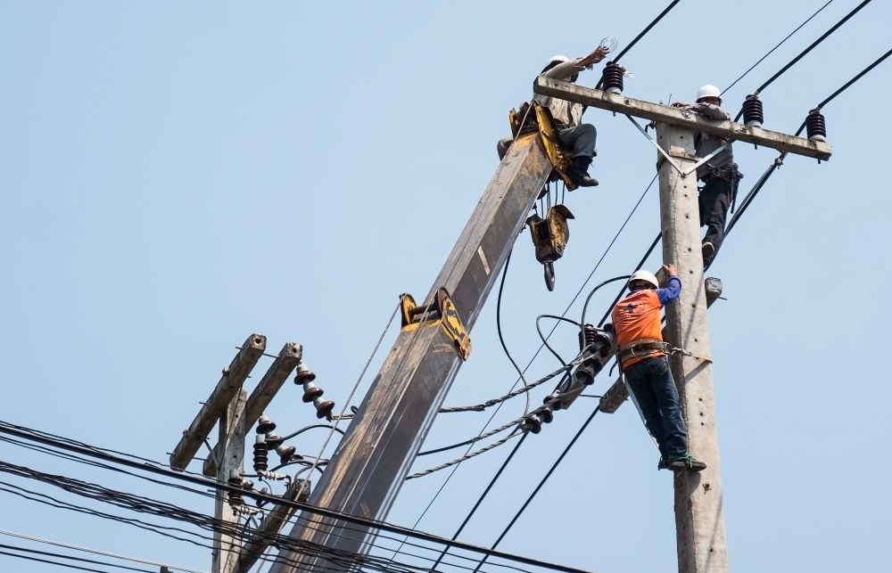
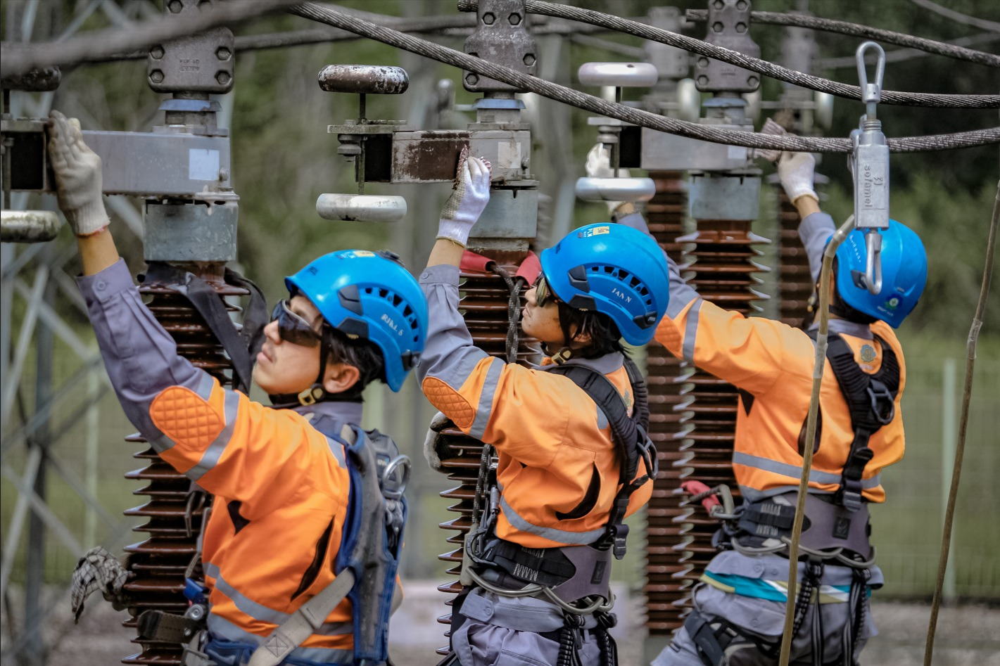
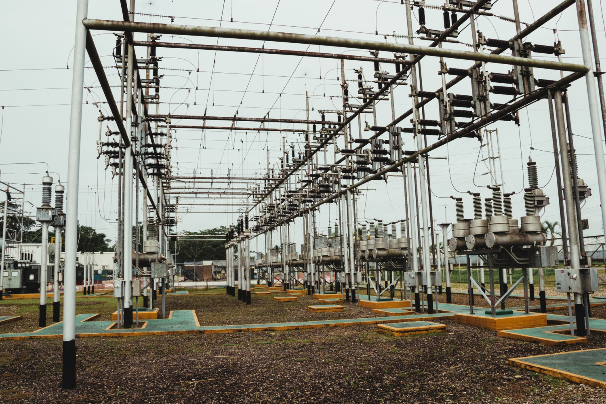
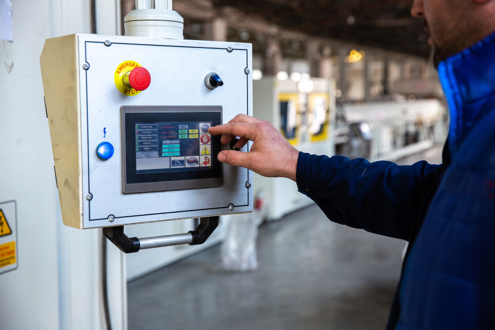

Perusahaan terdepan dalam distribusi dan pemeliharaan infrastruktur kelistrikan nasional dengan standar keselamatan kerja kelas dunia.
Dedikasi lebih dari dua dekade dalam membangun infrastruktur kelistrikan yang andal dan aman bagi masyarakat Indonesia.
Sistem Informasi K3 · Malang, Jawa Timur
PT Power Grid Indonesia adalah perusahaan nasional yang bergerak di bidang distribusi energi listrik, pemeliharaan gardu induk, dan pembangunan infrastruktur kelistrikan skala besar. Didirikan pada tahun 1999, kami telah melayani jutaan pelanggan di seluruh wilayah Jawa Timur dengan komitmen kuat terhadap keandalan pasokan dan keselamatan kerja.
Sebagai perusahaan kelistrikan yang bersertifikasi ISO 45001:2018, kami menempatkan Keselamatan dan Kesehatan Kerja (K3) sebagai fondasi dalam setiap operasional. Seluruh tenaga kerja kami terlatih dan dilengkapi dengan standar perlindungan tertinggi di industri kelistrikan.
Menjadi perusahaan infrastruktur kelistrikan terpercaya di Indonesia yang mengutamakan keselamatan, keandalan, dan keberlanjutan dalam setiap aspek operasional demi mendukung kemajuan bangsa.
Mengoperasikan dan memelihara jaringan distribusi listrik berstandar tinggi, menerapkan sistem K3 secara konsisten, mengembangkan kompetensi SDM, dan berkontribusi aktif bagi pertumbuhan infrastruktur energi nasional.
Safety First — Tidak ada pekerjaan yang begitu mendesak sehingga tidak ada waktu untuk melakukannya dengan selamat. Keselamatan adalah tanggung jawab setiap individu.
Empat bidang operasional utama yang dijalankan PT Power Grid Indonesia dengan standar teknis dan keselamatan tertinggi.

Pengelolaan dan pengoperasian jaringan distribusi tegangan menengah (20 kV) dan tegangan rendah (380/220 V) untuk melayani kebutuhan listrik rumah tangga, industri, dan komersial.

Inspeksi berkala, perbaikan, dan perawatan preventif seluruh komponen gardu induk meliputi transformator daya, switchgear, proteksi rele, dan sistem grounding sesuai standar PLN.

Perencanaan, pembangunan, dan pengembangan jaringan transmisi baru, penggantian jaringan usang, serta pemasangan tiang listrik dan kabel bawah tanah sesuai kebutuhan beban.

Implementasi dan operasional sistem SCADA (Supervisory Control and Data Acquisition) untuk pemantauan jaringan secara real-time, deteksi gangguan otomatis, dan manuver jaringan dari jarak jauh.
Identifikasi dan pemahaman risiko adalah langkah pertama menuju tempat kerja yang aman dan bebas kecelakaan.
Paparan arus listrik langsung akibat kontak dengan konduktor bertegangan dapat menyebabkan luka bakar serius, gangguan irama jantung, kerusakan jaringan saraf, hingga kematian.
Percikan api dari peralatan listrik, overheating transformator, korsleting panel, atau kebocoran minyak isolasi dapat memicu kebakaran yang sulit dikendalikan di area kelistrikan.
Pekerjaan pada tiang listrik, gardu induk, dan jaringan transmisi di ketinggian lebih dari 2 meter mengandung risiko jatuh yang berpotensi fatal jika tanpa pengaman yang memadai.
Paparan medan elektromagnetik (EMF) frekuensi rendah yang berkepanjangan di sekitar jaringan tegangan tinggi dan transformator daya berpotensi menimbulkan gangguan kesehatan jangka panjang.
Sistem Manajemen K3 bukan sekadar kewajiban hukum — ini adalah investasi nyata dalam keberlangsungan dan produktivitas perusahaan.
Sistem K3 yang baik mencegah kecelakaan fatal di area kerja bertegangan tinggi. Setiap prosedur dirancang untuk mengeliminasi atau meminimalkan paparan bahaya listrik.
Mematuhi UU No. 1 Tahun 1970 tentang Keselamatan Kerja dan Permenaker K3 Listrik. Pelanggaran dapat berakibat sanksi pidana, denda, dan pencabutan izin operasional.
Investasi K3 jauh lebih murah dibanding biaya kecelakaan kerja (kompensasi, perbaikan alat, kerugian produksi). Tiap Rp 1 yang diinvestasikan K3 berpotensi hemat Rp 5–10.
Pekerja yang merasa aman lebih produktif, memiliki tingkat absensi lebih rendah, dan loyalitas lebih tinggi. Budaya K3 positif membangun kepercayaan dan kepuasan kerja karyawan.
Rekam jejak K3 yang baik meningkatkan kepercayaan mitra, pelanggan, investor, dan regulator. Sertifikasi K3 internasional menjadi keunggulan kompetitif dalam tender proyek besar.
Insiden kecelakaan kerja berpotensi menghentikan operasi distribusi listrik dan merugikan jutaan pelanggan. K3 menjamin keberlangsungan layanan dan keandalan pasokan energi.